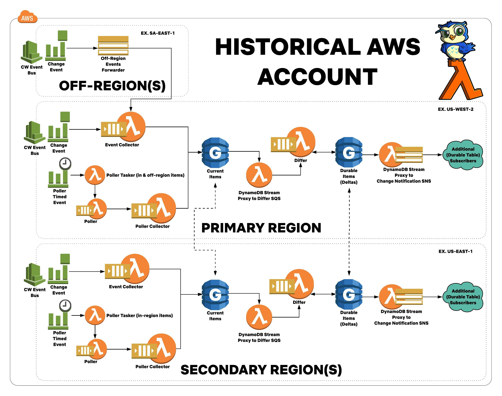

Historical Architecture¶
Historical is a serverless application in AWS. It consists of many components and are described in this document.
Historical is written in Python 3 and heavily leverages AWS technologies such as Lambda, SNS, SQS, DynamoDB, CloudTrail, and CloudWatch.
General Architectural Overview¶
Here is a diagram of the Historical Architecture: 
{kind=link}
Please Note: This stack is deployed for every technology monitored! There are many, many Historical stacks that will be deployed!
Polling vs. Events¶
Historical is both a polling and event driven system. It will periodically poll AWS accounts for changes. Because Historical responds to events in the environment, polling doesn't need to be very aggressive.
Unfortunately, events are not 100% reliable, and as such, polling is required to describe items that may have had lost events.
Historical is eventually consistent, and makes a best effort to maintain a current and up-to-date inventory of assets.
Prerequisites¶
For all of this to work the following prerequisites that must be satisfied:
- ALL AWS accounts must be configured to send CloudWatch events over a CloudWatch Event Bus to the Historical AWS account.
- ALL AWS accounts and ALL regions in those accounts need to have a CloudWatch Event rule that captures ALL events and sends them over the Event Bus.
- ALL AWS accounts must have CloudTrail enabled.
- A
HistoricalIAM role must exist in ALL AWS accounts with permissions that are defined here*(TODO ADD THESE!). This role must have anAssumeRolePolicyDocumentto permit access from theHistoricalLambdaProfileIAM role in the Historical Account. - Historical makes use of SWAG to define which AWS accounts Historical is enabled for. SWAG must be properly configured for Historical to operate.
The CloudWatch configuration is outlined here:

The IAM configuration is outlined here: TODO ADD ME
Regions¶
Historical has the concept of regions that fit 3 categories:
- Primary region
- Secondary region(s)
- Off region(s)
The Primary Region is considered the "Base" of Historical. This region has all the major components that make up Historical. This region is responsible for getting events from ALL the off-regions -- which are regions that don't require a full Historical stack, but would still like to receive events from.
The Secondary Region(s) are regions that are important to you. Secondary regions look like the primary region, and process events locally. If you have a lot of infrastructure in a region, you should place a Historical stack there. This will allow you to quickly receive and process events, and also gives your applications a regionally-local means of accessing Historical data.
The Off Region(s) are regions you don't have a lot of infrastructure deployed in. However, you still want visibility in these regions should events happen there. These regions have very minimal amount of infrastructure deployed. These regions will forward ALL events to the Primary Region for processing.
Note: It is highly recommended to have a Historical off-region stack in any region that is not Primary or Secondary. This will ensure full visibility in your environment.
Component Overview¶
This section describes some of the high-level architectural components.
Primary Components¶
Below are the primary components of the Historical architecture:
- CloudWatch Event Rules
- CloudWatch Change Events
- Poller
- Collector
- Current Table
- DynamoDB Stream Proxy
- Differ
- Durable Table
- Off-region SNS forwarders
As general overview, the infrastructure follows a pipeline from start to finish. An event will arrive, will get enriched with additional information, and will provide notifications to downstream infrastructure on the given changes.
SQS queues are used in as many places as possible to trigger Lambda functions. SQS makes it easy to provide Lambda execution concurrency, with retry on failure as well as dead-letter queuing capabilities.
SNS topics are used to make it easy for N number of interested parties to subscribe to the Historical DynamoDB tables as they become updated. Presently, this is only attached to the Durable table. More details on this below.
CloudWatch Event Rules¶
There are two different CloudWatch Event Rules:
- Timed Events
- Change Events
Timed events are used to kick off the Poller. See the section on the poller below for additional details. Change events are events that arrive from an asset in the AWS environment undergoing a change.
Poller¶
The Poller's primary function is to obtain a full inventory of AWS assets.
The Poller is split into two parts:
- Poller Tasker
- Poller
The "Poller Tasker" is a Lambda function that iterates over all AWS accounts Historical is configured for, and will task the Poller to list all assets in the given environment.
The Poller Tasker in the PRIMARY REGION will task the Poller to list assets that reside in the primary region and all off-regions. A Poller Tasker in a SECONDARY REGION will only task a poller to describe assets that reside in the same region.
The Poller lists all assets in a given account/region, and will task a "Poller Collector" to fetch details about the asset in question.
Collector¶
The Collector's primary function is to describe a given AWS asset and store its configuration to the "Current" DynamoDB table.
The Collector is split into two parts (same code, different execution triggers):
- Poller Collector
- Event Collector
The Poller Collector is a collector that will only respond to polling events. The Event Collector will only respond to CloudWatch change events.
The Collector is split into two parts in order to prevent change events from being sandwiched in between polling events. Historical will always try to give priority to change events over polling events to ensure timeliness of asset configuration changes.
In both cases, the Collector will go to the AWS account and region that the item resides in, and use boto3 to describe the configuration of the asset.
Current Table¶
The "Current" table is a global DynamoDB table that stores the current configuration of a given asset in AWS.
This acts as a cache for current the state of the environment.
The Current table has as DynamoDB stream that will kick off the DynamoDB Stream Proxy, which will then trigger the Differ.
Special Note:¶
The Current table has a TTL set on all items. This TTL is updated any time a change event arrives, or when the poller runs. The TTL is set to clean-up orphaned items, which can happen if a deletion event is lost. Deleted items will not be picked up by the Poller (only lists items that exist in the account) and thus, will be removed from the Current table on TTL expiration.
DynamoDB Stream Proxy¶
The DynamoDB Stream Proxy is a Lambda function that proxies DynamoDB stream events to SNS or SQS. The purpose is to task subsequent Lambda functions on the specific changes that happen to the DynamoDB table.
The Historical infrastructure has two configurations for the DynamoDB forwarder:
- Current Table Forwarder (DynamoDB Stream Proxy to Differ SQS)
- Durable Table Forwarder (DynamoDB Stream Proxy to Change Notification SNS)
The Current Table Forwarder proxies events to the SQS queue that triggers the Differ Lambda function. This is sent to SQS to speed up the time to trigger the Differ. SNS lacks a batch message sending API, and thus sending to SNS is slower as a result.
The Durable Table Forwarder proxies events to an SNS topic that any downstream subscriber for effective infrastructure changes can react to. SNS enables N subscribers to events.
Special Note:¶
DynamoDB Streams in Global DynamoDB tables triggers this Lambda whenever a DynamoDB update occurs in ANY of the regions the table is configured to sync with. Thus, to avoid Historical Lambda functions from "stepping on each other's toes", the DynamoDB Stream Proxy has a PROXY_REGIONS environment variable. This variable (a comma-separated list of AWS regions) is configured to only proxy DynamoDB stream updates that occur to assets that are configured. The PRIMARY REGION will be configured to proxy events that occur in the primary region, and all off-regions. The SECONDARY REGION(S) will be configured to proxy events that occur in the same region.
Another Special Note:¶
DynamoDB items are capped to 400KB. SNS and SQS have maximum message sizes of 256KB. Logic exists to handle cases where DynamoDB items are too big to send over to SNS/SQS. Follow-up Lambdas and subscribers will need to make use of the Historical API to fetch the full configuration of the item either out of the Current or Durable tables (depending on the use case).
Differ¶
The Differ is a Lambda function that gets triggered upon changes to the Current table. The Differ will check if the asset in question has had an effective change. If so, the Differ will save a new change record in the Durable table to maintain history of the asset as it changes over time, and will also save the CloudTrail context, including the time at which the event occurred.
Durable Table¶
The "Durable" table is a global DynamoDB table that stores an asset configuration with change history.
The Durable table has as DynamoDB stream that will kick off another DynamoDB Stream Proxy, which will be used for interested parties to react to effective changes that occur in the environment.
Off-Region SNS Forwarders¶
In off-regions, very bare infrastructure is intentionally deployed. This helps to reduce costs and complexity of the Historical infrastructure.
This is a SNS Topic that receives CloudWatch events for asset changes that occur in region. This topic forwards events to the Event Collector SQS queue in the primary region.
Special Stacks¶
Some asset types have different stack configurations due to nuances of the technology.
The following technologies have different stack types:
- S3
S3¶
The AWS S3 stack is almost identical to the standard stack. The difference is due to AWS S3 buckets having a globally unique namespace.
For S3, because it is not presently possible to only poll for in-region S3 buckets, the poller lives in the primary region only. The poller in the primary region polls for all S3 buckets in all regions.
The secondary regions will still respond to in-region events, but lack all polling components.
This diagram showcases the S3 stack.
{kind=link}
Installation & Configuration¶
Please refer to the installation docs for additional details.